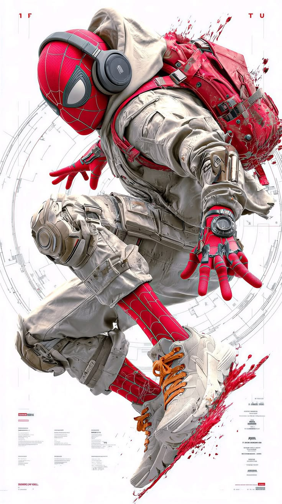

Ele está usando aquela máscara vermelha tradicional do Homem-Aranha, mas por cima tem um traje espacial branco/cinza, cheio de detalhes e equipamentos. Nas costas tem uma mochila vermelha enorme, e ele também está usando um fone de ouvido grande. A pose dele dá a impressão de que está pulando ou voando, com uma das mãos esticada para frente. As luvas e as pernas continuam com o vermelho e o desenho de teias do Homem-Aranha. Ele também está usando uns tênis brancos com cadarços laranjas.